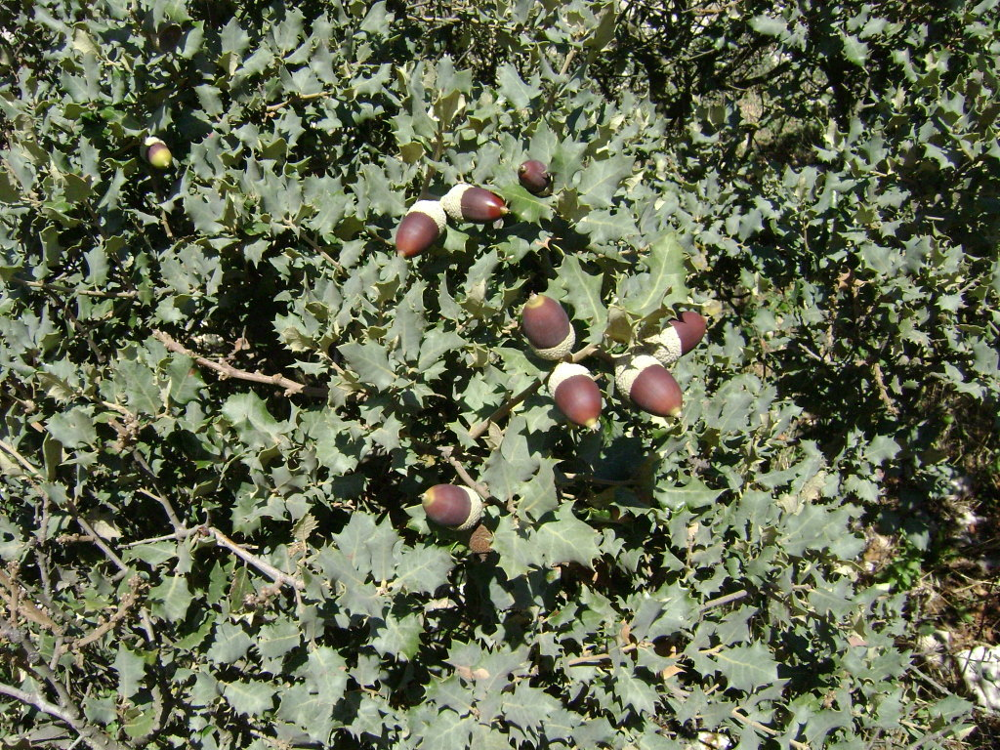

Ayuntamiento de Senés
JARDIN BOTANICO DE ESPECIES AUTOCTONAS DE SENES

Quercus ilex

La encina o carrasca (Quercus ilex) es un árbol perennifolio emblemático del ecosistema mediterráneo, adaptado a condiciones de sequía y suelos pobres. Es una de las especies más representativas del monte mediterráneo.
Presenta un tronco robusto y una copa densa y redondeada que proporciona abundante sombra. Sus hojas son pequeñas, coriáceas y de color verde oscuro, con el envés más claro. Produce bellotas, que constituyen su fruto característico.
La encina se distribuye ampliamente por la región mediterránea, formando bosques y dehesas. Crece en terrenos secos, pedregosos y bien drenados.
En el entorno de Senés, aparece en zonas de monte bajo y áreas naturales, siendo parte fundamental del paisaje autóctono.
La encina ha tenido múltiples usos tradicionales. Sus bellotas han servido como alimento para animales y, en algunos casos, para consumo humano tras su tratamiento.
Su madera es muy dura y resistente, utilizada históricamente como combustible y en carpintería.
La encina simboliza la fuerza, la longevidad y la resistencia. Es considerada un símbolo de estabilidad en el paisaje mediterráneo.
También representa la conexión con la tierra y la tradición rural.
En Senés, a la encina se le conoce como "carrasca", es clima seco y por eso, por eso se adapta tan bien a nuestra zona. en Senés existen dos zonas llamadas el Carrascal y el Chaparral donde están en cantidad
Los agricultores aprovechaban la madera , al ser fuerte, para hacer los aperos de labranza. su fruto, la bellota se utilizaba para alimento de animales, y tanbien para los humanos en tiempo de escasez. como medicamento para la diarrea y otros males.
Las bellotas maduran en otoño, siendo un recurso importante para la fauna y el ganado.
La encina puede vivir cientos de años, siendo una de las especies más longevas del entorno mediterráneo.
Es clave en la conservación del suelo y en la biodiversidad del ecosistema.